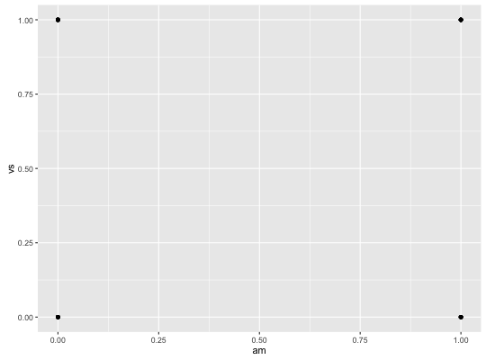
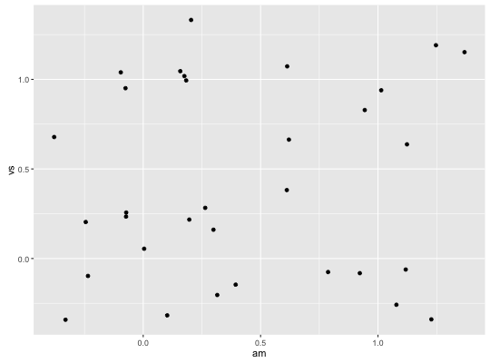
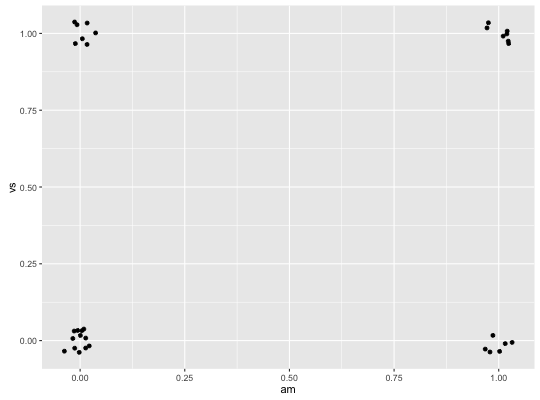
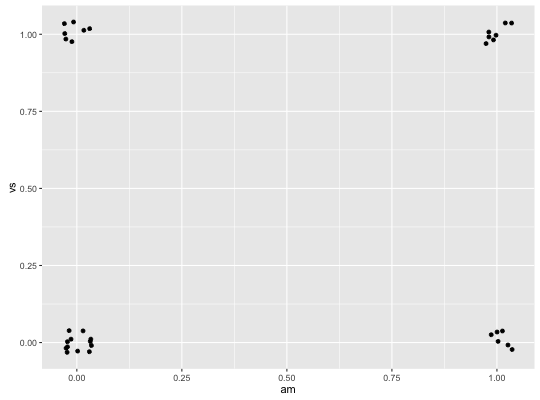
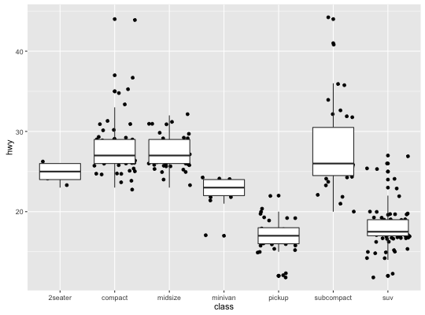

position_jitter(width = NULL, height = NULL)
Jitter points to avoid overplotting.
ggplot(mtcars, aes(am, vs)) + geom_point()
# Default amount of jittering will generally be too much for # small datasets: ggplot(mtcars, aes(am, vs)) + geom_jitter()
# Two ways to override ggplot(mtcars, aes(am, vs)) + geom_jitter(width = 0.1, height = 0.1)
ggplot(mtcars, aes(am, vs)) + geom_jitter(position = position_jitter(width = 0.1, height = 0.1))
# The default works better for large datasets, where it will # take up as much space as a boxplot or a bar ggplot(mpg, aes(class, hwy)) + geom_jitter() + geom_boxplot()
position_dodge;
position_fill,
position_stack;
position_identity;
position_jitterdodge;
position_nudge